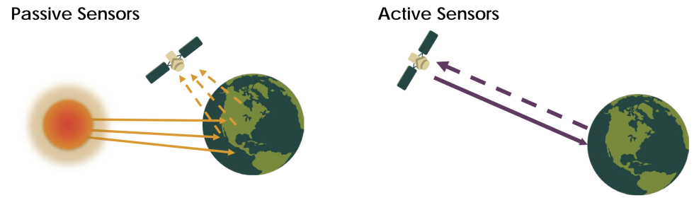

1 Introduction
1.1 Summary
1.1.1 Definition of Remote Sensing
According to NASA (n.d.), remote sensing refers to information obtained at a distance. These sensors are placed on satellites or aircrafts and they detect and document reflected or emitted energy.
1.1.2 What kinds of energy?
To cut it short, the answer is Electromagnetic Radiation (EMR). Electromagnetic waves are waves comprising of oscillations of electric and magnetic fields that oscillate at right angles to each other. They exist as a large range of frequencies, with gamma waves having the highest frequency and radio waves the lowest frequency. While human eyes only detects visible light, the sensors can utilise the full range of the electromagnetic spectrum to collect data.
1.1.3 Sensor Types
There are two types of remote sensors: active and passive sensors.
| Sensor Type | Description |
|---|---|
| Active sensor |
|
| Passive sensor |
|

1.1.4. Does EMR interact with other factors?
Yes, these radiations are often influenced by Earth’s surface and atmospheric conditions, which might distort the original information.
1.1.5 Four Resolutions of Remote Sensing Data
Spatial:
- Sizes of the raster cells
- The smaller the measure is, the more detailed the image is
Spectral:
- Values for each wavelength across the electromagnetic spectrum creates a spectral signature
- Every object has its own unique spectral signature, thus it can be used for identifying a specific object
- But spectral resolution is often affected by atmospheric particles which absorb parts of the spectrum
Temporal:
- Frequency of the recorded data
- There is typically a trade-off between how detailed an image is and how frequently it is updated in terms of pixels
Radiometric:
- Sensor’s ability to detect subtle differences in energy which determines the quality of images
1.2 Application
In this section, we will have a look at two studies in which spectral signature are employed in both academia and business.
1.2.1 Species Spectral Signature: DiscriminatingClosely Related Plant Species in the Amazon with Near-InfraredLeaf-Spectroscopy
Summary: Durgante et al. (2013) explored the use of Fourier-Transform Near-Infrared (FT-NIR) Leaf Spectroscopy* as a tool for discriminating closely related tree species in Amazonian forests. The researchers collected 36 spectral readings from the adaxial and abaxial surfaces of dried leaves for 159 individuals representing 10 species. Each spectral reading consisted of 1557 FT-NIR absorbance values. From these spectral readings, the researchers extracted Species Spectral Signatures (SSS) using discriminant analysis techniques, which represent the unique spectral properties of each species. The study suggests that Species Spectral Signatures (SSS) from FT-NIR Leaf Spectroscopy provides better results than current DNA barcoding for plant identification in tropical forests, and represents a fast, low-cost sampling technique.
FT-NIR* measures the interaction of near-infrared light with a plant leaf sample to analyze its chemical composition and physiological status.
Result: The best results showed 99.4% correct specimen identification when using the average of all 36 spectral readings per specimen and stepwise selected variables.
Comment:
This study was meaningful in contributing to the field of biodiversity inventory in tropical countries. The use of high technology instruments and appropriate techniques for discriminating tree species is essential for better forest management and conservation.
The results of this study suggest that the Species Spectral Signatures (SSS) from FT-NIR Leaf Spectroscopy could be a powerful tool for plant identification, especially in areas where DNA barcoding is challenging due to the lack of reproductive structures.
Limitation: It should be noted that further tests are required to assess the potential of FT-NIR spectroscopy for plant identification at broader geographical and phylogenetic scales.

1.2.2 Classification of blueberry fruit and leaves based on spectral signatures
Summary: Yang, Lee, and Williamson (2012) investigated the use of blueberry spectral analysis to provide necessary wavelengths for the development of a multispectral imaging system for estimating blueberry yield. Samples of fruit and leaves from different stages of maturity were collected from two blueberry fields in Florida, USA, in 2010 and 2011. The researchers used 3 classification models and found that an Multi-Nomial Logistic regression (MNR) model was the most efficient. The study suggests that a blueberry fruit detector could be developed using multispectral imaging.
Pre-Processing: Spectral reflectance was measured, and normalised indices were used to develop classification models using classification tree, principal component analysis, and multinomial logistic regression.
Result: The study found that an Multi-Nomial Logistic regression (MNR) model with six wavelengths performed the best for the 2011 dataset, with a prediction accuracy of 100% for leaf and mature fruit, 97.8% for young fruit, 97.9% for near-young fruit, and 94.6% for near-mature fruit.
Comment: It was surprising to see that spectral signature can be also applied to business sector. The use of spectral analysis for crop yield estimation has the potential to significantly impact agricultural productivity. The findings of this study demonstrate the potential of using multispectral imaging to accurately estimate blueberry yield. This technology can help farmers make data-informed decisions regarding their crop management practices, leading to increased yields and reduced costs.
Limitation: There should be more research that explore the potential of multispectral imaging for yield estimation in other crops too.

A bit of thought…..
I was mind-blown when I found out that spectral signature is like DNA!! Initially, I thought the remote sensing imagery are just images taken from a far distance but it turned out that they contain a whole lot of information than they look. This fact sparked my curiosity. If each object has its own distinctive spectral signature, could we also use this for mining valuable resources buried somewhere on this planet that might save millions of life?!
Furthermore, with spectral signature, could we develop a ML model that helps us detect vulnerable or endangered species in the nature? This could be more time-, cost-effective than previous methods that are being employed in the field.
Personal Reflection
Before taking this lecture, I did hear about the terminology “remote sensing”. But I have to admit that I was quite scared of it as it appealed to me so-called “elite-science”. Of course, we do see a lot of remote sensing imagery in our daily life but not many of us actually use the imagery to do work or study. In this regard, the introduction to remote sensing helped me feel more familiar with this domain of study field.
Things I found interesting!!
- I, personally, found the spectral resolution very interesting. Its limitless usage - both in academia and business - made me wonder if it could be also used in the context of the urban environment. As a person who is interested in urban green spaces, I wondered whether the health of green spaces in a city can also be measured with the spectral resolution. For instance, ill trees could show different patterns compared to those of the healthy ones.
- Furthermore, I was wondering whether there are any methods that improve the quality of data obtained from passive sensors as they cannot obtain a good quality data in the presence of bad weather. Under the circumstances where we have passive sensors, are there any techniques that could correct images?
Any considerations?
While free access and publicly availability are the Earth Observation (EO) data’ real power, the EO data should be treated with caution. The analysis based on EO data can be misleading if it does not contain any context data, such as demographic and economic data. Therefore, it seems necessary that we fully understand the context when we do our analysis!!
Any link to policy?
Apart from what I mentioned, there will be more opportunities that remote sensors can come into play in achieving policy goals. The terminology “remote sensing” is not yet appearing in policy documents, but the time will come. Who would not want to make use of freely available data and its numerous advantages??
References
NASA EarthData. (n.d.) https://www.earthdata.nasa.gov/ (Accessed: 26.01.2023)
GIS Geography. (2022) ‘Why the Atmospheric Window Matters in Earth Science’[Online]. Available at: https://gisgeography.com/atmospheric-window/ (Accessed: 26.01.2023)